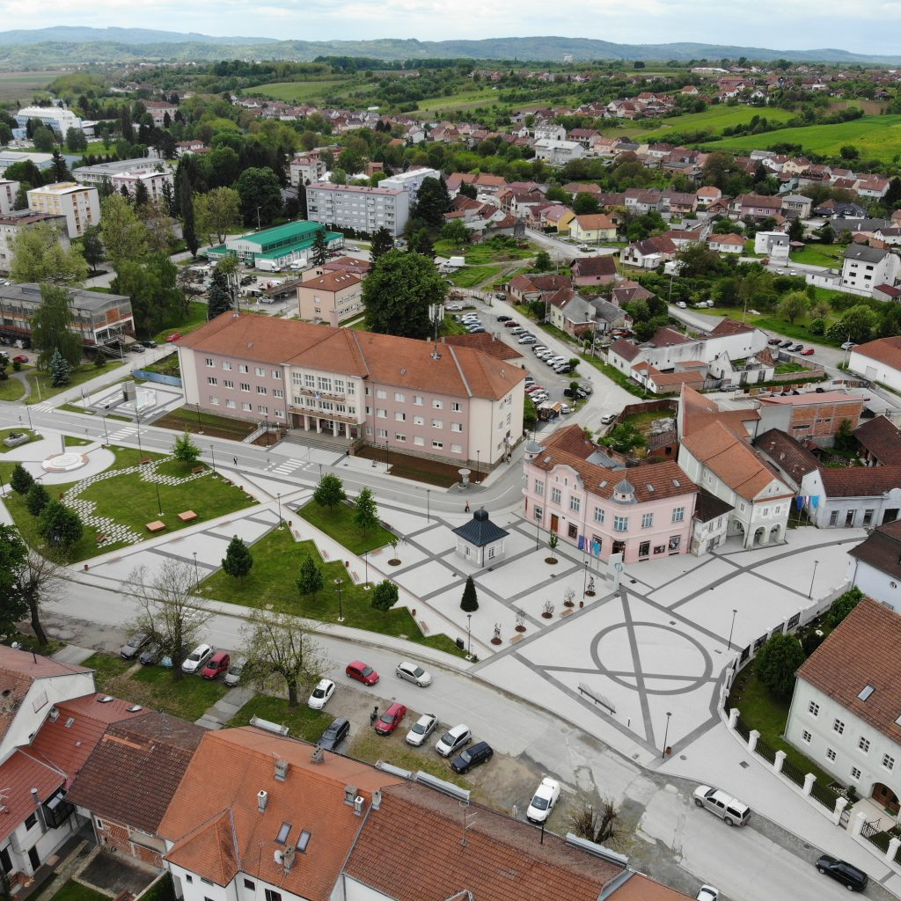

O Gradu Pakracu
Pakrac je grad u Hrvatskoj, u Požeško-slavonskoj županiji. Grad Pakrac nalazi se u zapadnom dijelu Slavonije,
u sastavu Požeško-slavonske županije. Nalazi se podno gorja Papuka i Psunja u iznimno lijepom prirodnom okruženju.
Najpoznatiji je po tome što je baš ovdje bila prva kovnica novca!

Općenito
Grad Pakrac nalazi se u u zapadnom dijelu Slavonije, u sastavu Požeško-slavonske županije.
- Geografska širina: 45°26’21″N
- Geografska dužina: 17°11’46″E
- Nadmorska visina: 178 m
- Površina: 358,82 km²
- Površina: 358,82 km²
- Gustoća naseljenosti: 365 st./km²
Sastoji od 42 naselja: Badljevina, Batinjani, Bjelajci, Branešci, Brusnik, Bučje, Cicvare, Cikote,
Dereza, Donja Obrijež, Donja Šumetlica, Donji Grahovljani, Dragović,
Glavica, Gornja Obrijež, Gornja Šumetlica, Gornji Grahovljani, Jakovci,
Kapetanovo Polje, Koturić, Kraguj, Kričke, Kusonje, Lipovac, Mali Banovac,
Mali Budići, Novi Majur, Omanovac, Ožegovci, Pakrac, Ploštine, Popovci, Prekopakra, Prgomelje, Rogulje,
Srednji Grahovljani, Stari Majur, Španovica, Tisovac, Toranj, Veliki Banovac i Veliki Budići.
Prema popisu stanovništva iz 2021. godine, na području grada Pakraca živi ukupno 7.095 stanovnika.